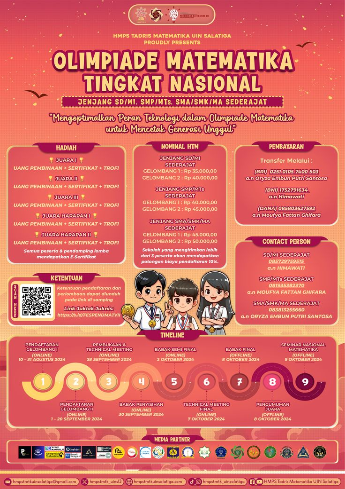

Tanggal: 10 Agustus 2026

Prestasi membanggakan datang dari siswa SMPN 2 Bobotsari. Ananda berhasil meraih Juara 2 Olimpiade Matematika tingkat Kabupaten. Semoga bisa terus mengharumkan nama sekolah.
Sumber: Humas SMPN 2 Bobotsari
← Kembali ke Beranda